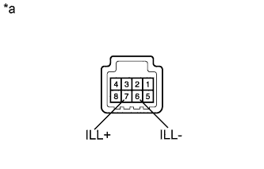

ВЫКЛЮЧАТЕЛЬ ОЧИСТИТЕЛЯ ФАР > ПРОВЕРКА |
| 1. ПРОВЕРЬТЕ ПЕРЕКЛЮЧАТЕЛЬ ОЧИСТИТЕЛЯ ФАР В СБОРЕ |
|  |
Измерьте сопротивление в соответствии со значениями, приведенными в таблице ниже.
| Контакты для подключения диагностического прибора | Положение переключателя | Заданные условия |
| 5 (E) - 8 (B) | Переключатель очистителя фар включен | Менее 1 Ом |
| Переключатель очистителя фар выключен | 10 кОм или более |
Подсоедините положительный (+) вывод аккумуляторной батареи к контакту 3 (ILL+), а отрицательный (-) вывод – к контакту 2 (ILL-).
Убедитесь, что подсветка переключателя очистителя фар в сборе включилась.
| *a | Устройство с отсоединенным жгутом проводов (переключатель очистителя фар в сборе) |